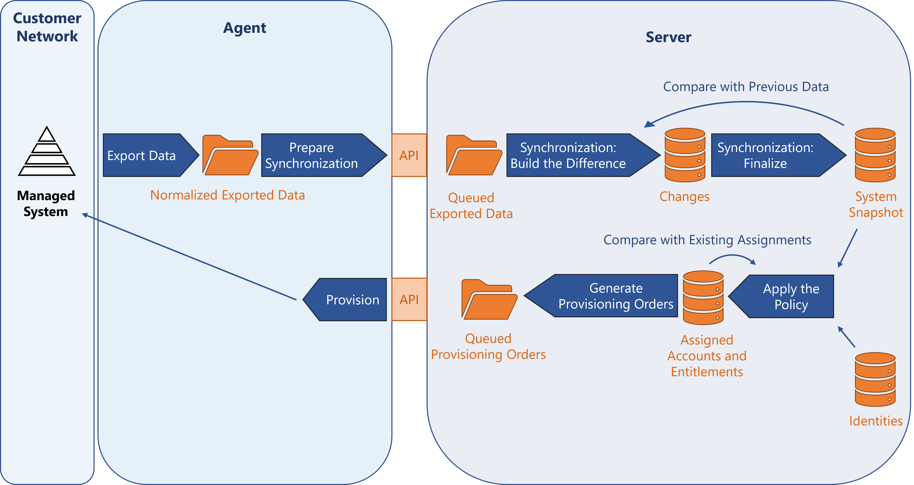

Troubleshoot Connector Jobs
This guide helps understand the behavior of synchronization and provisioning tasks in order to spot and fix errors.
Overview
A managed system is synchronized and provisioned to/from Identity Manager with the following task sequence:

Export data
Exporting means that the agent reads the system's data and takes it out to one or several external files, as tables.
The output is stored in Temp/ExportOutput.
In order to spot what was exported or not for the next incremental export, cookie files are stored in Temp/ExportCookies.
See the Usercube-Export-Configuration topic for additional information.
Prepare synchronization
Preparing the synchronization means that the agent reads the tables, output of the export step, and produces one file for each association (also named multi-valued navigation property), where the data is prepared for synchronization.
For example, the data is sorted according to their primary keys, in order to optimize the comparison with the database.
The output is stored in Work/Collect, and sent to the server to queue in Work/Synchronization.
See the
Usercube-Export-Configuration
topic for additional information on how to prepare the synchronization executable Usercube-Prepare-Synchronization.
Synchronize
Synchronizing means reading the data of the external file, output of the preparation step, and taking it to Identity Manager.
This is done by the synchronization executable Identity Manager-Synchronize.
Synchronization: build the difference
The server compares the exported files, output of the preparation step, with the previous data of the system, and with the data contained in the database. Based on this comparison, the changes are stored in the database.
The output is stored in UR_ResourceChanges.
Synchronization: finalize
When at least one synchronization Thresholds is exceeded, the change list can be seen in the Synchronization Changes tab, accessible from the job progress screen.
When the synchronization thresholds are not exceeded, or they are bypassed, the potential preparatory files are consumed and the changes are applied.
The server updates the values of the properties computed via expressions. A user's history can be used to view the impact of this step on the properties.
Apply the policy
Applying the policy means that the server prepares the correlation keys and computes the role model.
Preparing the correlation keys means that the server recomputes the keys that will later link accounts to their owners. The output is stored in UP_ResourceCorrelationKeys.
This is done by the correlation key computation executable Usercube-Compute-CorrelationKeys.
Computing the role model means that the server applies all the rules in order to assign accounts and entitlements to identities.
The assigned accounts and entitlements are stored in UP_Assigned*, and can be seen in users' View Permissions tab.
This is done by the role model computation executable Usercube-Compute-RoleModel.
Generate provisioning orders
Generating the provisioning orders means that the server builds JSON files to prepare the execution of provisioning.
The output is stored in Work/ProvisioningOrders.
This is done by the order generation executable Usercube-Generate-ProvisioningOrders.
Provision
Provisioning means that the agent asks the server to send the provisioning orders, in order to read the orders and actually make modifications to the managed system.
Once consumed, the files are moved to the subfolder Downloaded.
This is done by the provisioning executables Usercube-Fulfill-*.
In order to test the provisioning step, there is no need relaunching the whole task sequence. You can, for example, keep a provisioning order from the previous step, and adjusting it before launching provisioning.
Troubleshoot
Troubleshoot an error in a connector job by running each step individually until you see something that you did not expect.